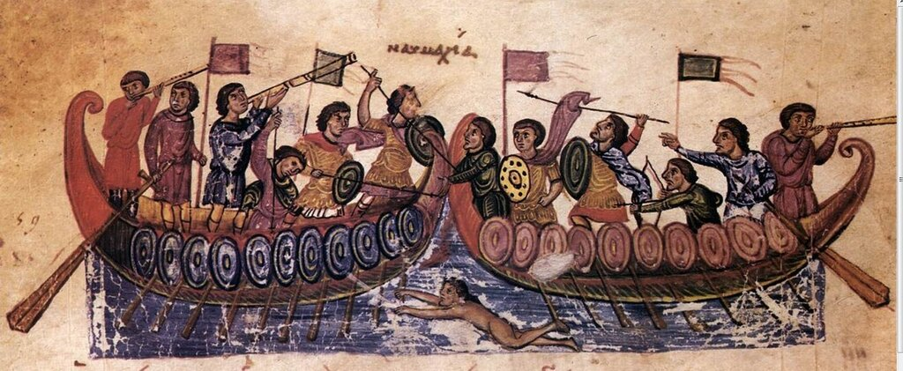
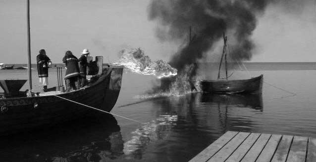
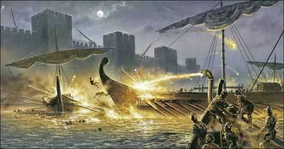

Зачем доискиваться, какая историческая правда лежит в основе красивой, поэтической выдумки? Не означает ли это лишить ее всякой прелести и аромата?
Жорж Санд, Ускок

Миниатюра из Кинегетики Псевдо-Оппиана. Biblioteca Nazionale Marciana, Венеция, XI век.

Испытание сифона греческого огня, проведенное Colin Hewes и Andrew Lacey под руководством Хэлдона (John Haldon)
Выступившие в поход на Иерусалим франки, стремясь к завоеванию сирийских городов, многое обещали епископу Пизы за поддержку в достижении их цели. Их уговоры подействовали, и он, заручившись поддержкой еще двоих епископов, живших у моря, не стал медлить. Снарядив диеры и триеры, дромоны и другие самые быстроходные суда, числом около девятисот, он направился к франкам. При этом он отделил значительную часть своих кораблей и отправил их грабить Корфу, Левкаду, Кефалинию и Закинф. Император, получив об этом известие, приказал строить корабли во всех областях Ромейской империи. Немало кораблей стал он сооружать и в самом царственном городе. Сам же он время от времени совершал объезды на монере и указывал строителям, что и как следует делать. Зная опытность пизанцев в морских боях и опасаясь сражения с ними, император поместил на носу каждого корабля бронзовую или железную голову льва или какого-нибудь другого животного, — позолоченные, с разинутой пастью, головы эти являли собой страшное зрелище. Огонь, бросаемый по трубам в неприятеля, проходил через их пасть, и казалось, будто его извергают львы или другие звери. Устроив все таким образом, он позвал к себе Татикия, только что вернувшегося из Антиохии, передал ему корабли и назвал его «светлейшая голова». Общее командование флотом он поручил Ландульфу и назначил его, как самого опытного в морской войне, великим дукой
Анна Комнина. "Алексиада" (перевод Я. Н. Любарского), 1965, с.313

Между тем ромейский флот не вступил в бой с пизанцами в правильном боевом строю, а напал на них быстро и беспорядочно. Сам Ландульф первым подплыл к пизанским кораблям, но неудачно метнул огонь и достиг лишь того, что огонь рассеялся. Комит по имени Элеимон отважно атаковал с кормы большой корабль, однако его судно зацепилось за руль вражеского и не смогло отплыть. Элеимон попал бы в плен, если бы немедленно не кинулся к снарядам, не бросил в пизанцев огонь н не поразил цель. Затем он быстро повернул корабль и тотчас же поджег еще три огромных варварских корабля. Между тем внезапно разгулявшийся ветер взволновал море, стал трепать корабли и грозил вот-вот потопить их (волны бушевали, реи скрипели и паруса рвались). Варвары, испуганные огнем (ведь они не привыкли к снарядам, благодаря которым можно направлять пламя, по своей природе поднимающееся вверх, куда угодно — вниз и в стороны) и устрашенные бурей, решили обратиться в бегство.
Там же, с. 314